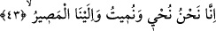

(el-Hâkka, 69/30-31) derler. Burada herkes kendisiyle baş başa kalmış, akraba ve
dostlarından kaçmıştır: “O gün, herkesin kendine yetip artacak bir derdi vardır.”
(Abese, 80/37)
Nakledilmiştir ki insanlar mezarlarından çıkmadan önce Cebrâîl ile Mikâîl (a.s.)
yeryüzüne gelirler. Hz. Mustafa (s.a.)’e burak, hulle ve tâc getirirler. O günün dehşet ve
korkusundan Efendimiz’in Ravza’sının nerede olduğunu bilemezler. Yeryüzünden
sorarlar, yeryüzü: “Ben kıyametin korku ve dehşetinden içimde ne taşıdığımı
bilemiyorum” der. Cebrâîl (a.s.) doğuya ve batıya bakar, Efendimizin istirahatgâhının
bulunduğu yerden bir nur yükselir. Cebrâîl (a.s.) oraya doğru koşar, Efendimiz (s.a.)
bulunduğu yerden dışarı çıkar.
Haberde vârid olmuştur ki Efendimiz (s.a.); “Yerden ilk çıkacak olan benim”
buyurmuştur. Peygamberimiz (s.a.)’in ilk sözü; “Ey Cebrâîl! Ümmetimin durumu nasıl?
Onlardan bir haber var mı?” olur. Cebrâîl: “Efendim! İlk siz uyandınız onlar hâlâ
toprak altında” der ve “Efendim! Siz cennet elbisesini giyin, tâcı başınıza takın ve
burak’a binerek şefaat makàmına gidin, ümmetiniz de size ulaşacaktır” diye cevap verir.
Mustafa (s.a.) bu şekilde giderek Hazret-i İzzet (c.c.)’e secdeye varır ve Hak Teâlâ’ya
hamd ü senâ eder. Hak Teâlâ’dan ona hitap ulaşır ki;
“Ey Seyyid! Bugün hizmet günü değildir, bugün bağış, atâ ve nimet günüdür. Bugün
secde günü değildir, bugün ikram ve cömertlik günüdür. Başını yukarı kaldır ve şefâat
et, ne istersen onu yapacağım. Sen dünyada bizim buyurduğumuz her şeyi yaptın, biz ise
bugün ne istersen onu yerine getireceğiz” buyurur. “Rabbin şüphesiz sana verecek ve
sen de hoşnut olacaksın.” (ed-Duhâ, 93/5)
Mevlânâ Câmî Silsiletü’z-Zeheb’de şöyle demiştir:
Merhametinden bana doğru bir bakış fırlat,
Fazlından yüzüme bir kapı aç.
Şefâatim için dudağını hareket ettir,
Benim ibadet ve günahıma bakma.
İsyan yükünün altında kalmışım,
Eğer elimden tutmazsan düşerim.
Bana, bu fakîre merhamet et,
Ey her eli tutan, benim de elimden tut.
43. Şüphesiz biz diriltir ve öldürürüz. Dönüş de ancak bizedir.
“Hayat veren de öldüren de biziz.’ Yani dünyada hiçbir kimse iştirak etmeden
kendimiz bunu yaparız. “Biz” mânâsına gelen “nahnu” zamirinin tekrar zikredilmesi